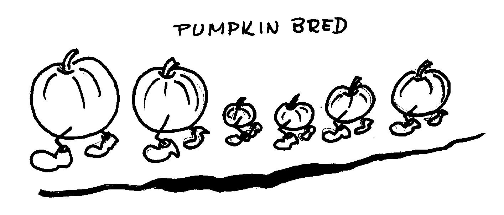

Banana Bread
Biscuits
Bishop's Bread
Blueberry Coffee Cake
Buttermilk Hotcakes
Chippewa Fried Bread
Cornmeal Mush
Crunchy Gradnola
Dutch Babies
Funnel Cakes
Gingerbread Scones
Northern Sweet Cornbread
Pumpkin Nut Bread
Sour-Cream Coffee Cake
Tea Scones
Waffles
A World of Breads, Dolores Casella

1 1/2 to 2 cups white or brown sugar
1/2 cup melted butter or very soft butter
1 3/4 cups canned pumpkin
3 large eggs, beaten
1 teaspoon cinnamon
1/2 teaspoon nutmeg
1 lemon rind grated
1 teaspoon salt
5 cups flour
2 tablespoons baking powder
2 cups chopped nuts
Preheat oven to 350º.
Combine the sugar, melted butter, pumpkin, and eggs. Stir until well blended. Sift salt, flour, and baking powder. Add the nuts and stir them through the flour so they are well coated. Stir the dry ingredients into the liquid ingredients until the dry ingredients are thoroughly moistened. Pour the batter into 2, well-buttered loaf pans and let stand for 20 minutes. Bake in a 350º oven until browned and done, about 1 hour. Be sure to test the loaves before removing from the oven. A toothpick or piece of spaghetti thrust into the center of the bread should come out clean.
Gently turn the loaves onto racks to cool.